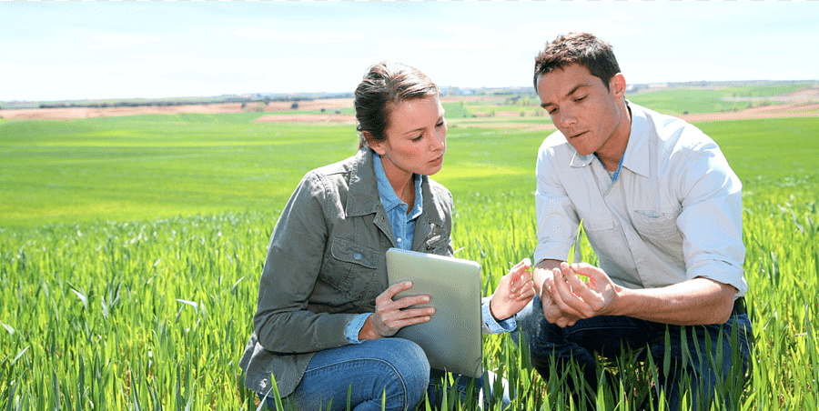
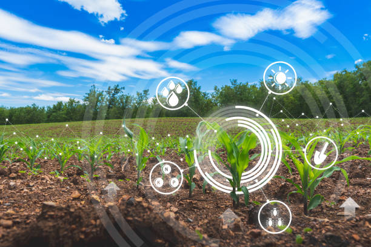

Our favorite, this application is so logical and yet so unexpected, because mostly you read about harvest prediction or ambient conditions management at later stages. Species selection is a tedious process of searching for specific genes that determine the effectiveness of water and nutrients use, adaptation to climate change, disease resistance, as well as nutrients content or a better taste. Machine learning, in particular, deep learning algorithms, take decades of field data to analyze crops performance in various climates and new characteristics developed in the process. Based on this data they can build a probability model that would predict which genes will most likely contribute a beneficial trait to a plant.
While the traditional human approach for plant classification would be to compare color and shape of leaves, machine learning can provide more accurate and faster results analyzing the leaf vein morphology which carries more information about the leaf properties.
For specialists involved in agriculture, soil is a heterogeneous natural resource, with complex processes and vague mechanisms. Its temperature alone can give insights into the climate change effects on the regional yield. Machine learning algorithms study evaporation processes, soil moisture and temperature to understand the dynamics of ecosystems and the impingement in agriculture.
Water management in agriculture impacts hydrological, climatological, and agronomical balance. So far, the most developed ML-based applications are connected with estimation of daily, weekly, or monthly evapotranspiration allowing for a more effective use of irrigation systems and prediction of daily dew point temperature, which helps identify expected weather phenomena and estimate evapotranspiration and evaporation.
Yield prediction is one of the most important and popular topics in precision agriculture as it defines yield mapping and estimation, matching of crop supply with demand, and crop management. State-of the-art approaches have gone far beyond simple prediction based on the historical data, but incorporate computer vision technologies to provide data on the go and comprehensive multidimensional analysis of crops, weather, and economic conditions to make the most of the yield for farmers and population.
The accurate detection and classification of crop quality characteristics can increase product price and reduce waste. In comparison with the human experts, machines can make use of seemingly meaningless data and interconnections to reveal new qualities playing role in the overall quality of the crops and to detect them.
Both in open-air and greenhouse conditions, the most widely used practice in pest and disease control is to uniformly spray pesticides over the cropping area. To be effective, this approach requires significant amounts of pesticides which results in a high financial and significant environmental cost. ML is used as a part of the general precision agriculture management, where agro-chemicals input is targeted in terms of time, place and affected plants.
Apart from diseases, weeds are the most important threats to crop production. The biggest problem in weeds fighting is that they are difficult to detect and discriminate from crops. Computer vision and ML algorithms can improve detection and discrimination of weeds at low cost and with no environmental issues and side effects. In future, these technologies will drive robots that will destroy weeds, minimizing the need for herbicides.
Similar to crop management, machine learning provides accurate prediction and estimation of farming parameters to optimize the economic efficiency of livestock production systems, such as cattle and eggs production. For example, weight predicting systems can estimate the future weights 150 days prior to the slaughter day, allowing farmers to modify diets and conditions respectively.
"The ability of ML to boost agricultural productivity while minimizing its environmental impact can guarantee humanity the potential to achieve food security. ML gives the grower information about his or her own operation that changes how they look at farming. We are using data to answer questions we couldn't answer before and exposing opportunity to growers to change behavior around some of their key decisions each year."